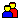
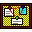
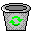

<!doctype html><meta charset="utf-8"><title>Retro 95 icon sheet</title>
<style>
body{margin:0;padding:12px;font:12px/1.2 monospace;background:#555;color:#fff}
h2{font-size:12px;margin:10px 0 4px}
.sheet{display:flex;flex-wrap:wrap;gap:6px;padding:8px}
figure{margin:0;display:flex;flex-direction:column;align-items:center;gap:4px;padding:4px;min-width:84px}
figcaption{background:#000;color:#fff;padding:1px 4px}
img{image-rendering:pixelated;display:block}
.strip{flex-basis:100%;display:flex;gap:4px;padding:4px}
</style>
<script>
// ?kind=dock narrows the sheet, for screenshots.
addEventListener( 'DOMContentLoaded', () => {
	const kind = new URLSearchParams( location.search ).get( 'kind' );
	for ( const s of document.querySelectorAll( 'section' ) ) {
		s.hidden = Boolean( kind ) && kind !== s.dataset.kind;
	}
} );
</script>
<section id="dock-0" data-kind="dock"><h2>dock &middot; desktop #008080</h2><div class="sheet" style='background:#008080'><figure><figcaption>dashboard</figcaption></figure><figure><figcaption>posts</figcaption></figure><figure><figcaption>media</figcaption></figure><figure><figcaption>pages</figcaption></figure><figure><figcaption>comments</figcaption></figure><figure><figcaption>appearance</figcaption></figure><figure><figcaption>plugins</figcaption></figure><figure><figcaption>users</figcaption></figure><figure><figcaption>tools</figcaption></figure><figure><figcaption>settings</figcaption></figure><figure><figcaption>assistant</figcaption></figure><figure><figcaption>mio</figcaption></figure><figure><figcaption>workspaces</figcaption></figure><figure><figcaption>system</figcaption></figure><figure><figcaption>exit</figcaption></figure><figure><figcaption>trash</figcaption></figure><figure><figcaption>trash-full</figcaption></figure><figure><figcaption>start</figcaption></figure><div class="strip"></div></div></section>
<section id="desk-1" data-kind="desk"><h2>desk &middot; desktop #008080</h2><div class="sheet" style='background:#008080'><figure><figcaption>explorer</figcaption></figure><figure><figcaption>corkboard</figcaption></figure><figure><figcaption>folder</figcaption></figure><figure><figcaption>folder-open</figcaption></figure><figure><figcaption>document</figcaption></figure><figure><figcaption>image</figcaption></figure><figure><figcaption>file</figcaption></figure><figure><figcaption>shortcut</figcaption></figure><figure><figcaption>user</figcaption></figure><figure><figcaption>tag</figcaption></figure><figure><figcaption>comment</figcaption></figure><figure><figcaption>bookmark</figcaption></figure><figure><figcaption>link</figcaption></figure><figure><figcaption>embed</figcaption></figure><figure><figcaption>app</figcaption></figure><figure><figcaption>trash</figcaption></figure><figure><figcaption>trash-full</figcaption></figure><div class="strip"></div></div></section>
<section id="dock-2" data-kind="dock"><h2>dock &middot; taskbar #c0c0c0</h2><div class="sheet" style='background:#c0c0c0'><figure><figcaption>dashboard</figcaption></figure><figure><figcaption>posts</figcaption></figure><figure><figcaption>media</figcaption></figure><figure><figcaption>pages</figcaption></figure><figure><figcaption>comments</figcaption></figure><figure><figcaption>appearance</figcaption></figure><figure><figcaption>plugins</figcaption></figure><figure><figcaption>users</figcaption></figure><figure><figcaption>tools</figcaption></figure><figure><figcaption>settings</figcaption></figure><figure><figcaption>assistant</figcaption></figure><figure><figcaption>mio</figcaption></figure><figure><figcaption>workspaces</figcaption></figure><figure><figcaption>system</figcaption></figure><figure><figcaption>exit</figcaption></figure><figure><figcaption>trash</figcaption></figure><figure><figcaption>trash-full</figcaption></figure><figure><figcaption>start</figcaption></figure><div class="strip"></div></div></section>
<section id="desk-3" data-kind="desk"><h2>desk &middot; taskbar #c0c0c0</h2><div class="sheet" style='background:#c0c0c0'><figure><figcaption>explorer</figcaption></figure><figure><figcaption>corkboard</figcaption></figure><figure><figcaption>folder</figcaption></figure><figure><figcaption>folder-open</figcaption></figure><figure><figcaption>document</figcaption></figure><figure><figcaption>image</figcaption></figure><figure><figcaption>file</figcaption></figure><figure><figcaption>shortcut</figcaption></figure><figure><figcaption>user</figcaption></figure><figure><figcaption>tag</figcaption></figure><figure><figcaption>comment</figcaption></figure><figure><figcaption>bookmark</figcaption></figure><figure><figcaption>link</figcaption></figure><figure><figcaption>embed</figcaption></figure><figure><figcaption>app</figcaption></figure><figure><figcaption>trash</figcaption></figure><figure><figcaption>trash-full</figcaption></figure><div class="strip"></div></div></section>
